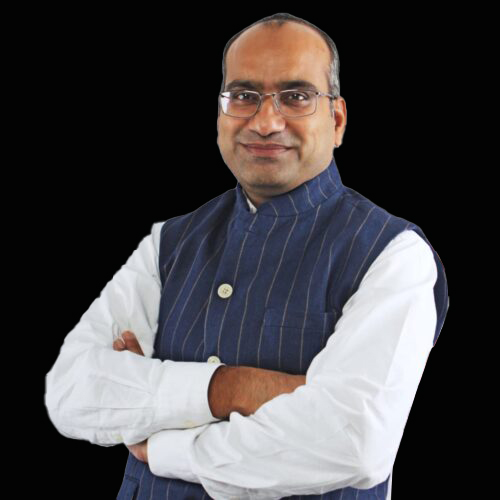
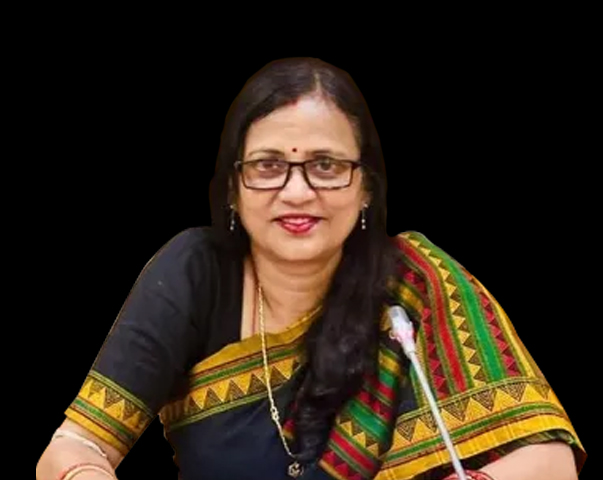

Iwan Walters MP
Member of Parliament (Victoria)
Iwan Walters is a serving Member of the Victorian Parliament, representing his constituency with a focus on community engagement and legislative leadership. He brings his experience in state governance and public service to strengthen Australia–India relations through strategic counsel.
Luba Grigorovitch MP
Member of the Victorian Parliament
Luba Grigorovitch is a Member of the Victorian Parliament with extensive experience in public policy, community advocacy, and parliamentary leadership. She contributes her deep understanding of state governance to support bilateral engagement initiatives between Australia and India.

Shri Sujeet Kumar
Member of Parliament (Rajya Sabha), Parliament of India
Shri Sujeet Kumar serves as a Member of the Rajya Sabha in the Parliament of India. With expertise in law, governance, and international engagement, he offers valuable perspectives on India's legislative and diplomatic priorities.

Dr. Tien Kieu
Former Member of the Victorian Parliament
Dr. Tien Kieu is a former Member of the Victorian Parliament and academic leader. His experience in policy, education, and multicultural affairs enriches cross-cultural dialogue and advisory insights.
.jpg)
Dr. T. Sumathy (Thamizhachi Thangapandian)
Member of Parliament (Lok Sabha), India
Dr. T. Sumathy, also known as Thamizhachi Thangapandian, serves as a Member of Parliament (Lok Sabha) in India. She is recognised for her contributions to cultural advocacy, education, and social development.

Sulata Deo, MP
Member of Parliament (India)
Sulata Deo is a Member of the Indian Parliament with leadership in legislative affairs and public policy. She offers key insights into governance and community engagement within India.
.jpg)

.jpg)